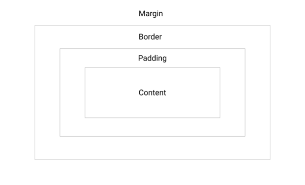

Structure, Phrasing and Display
Structural (block) elements, such as h1, div, and ol, span the entire width of the page (often taken up more than one line) and as a line break before and after the element. Contrastly, phrasing (inline) elements such as a and em take up only a part of the page (not the whole width) and do not have a line break. There are various different display elements, and some are: 1) display: none; - this allows the element to be completely removed 2) display: inherit; - allows the elements to be inherited from the parent element.
Box Model
The Box Model is a tool that can be used to describe design and layout wrapping HTML elements. It contains margins, border, and padding wrapping the content. This allows us to add spacing between text/content and the width/space of the page and or other elements through the use of margins, border, and padding. The box-sizing property defines how the width and height of an element are calculated through the syntax box-sizing: content-box|border-box|initial|inherit; border-box defines the content, padding and border.

Background Images
Using class and setting the background-img in css creates the article to have the background image, without having it in a new line. However, using the img tag in html sets the image to a new line, aside from the above and below elements.